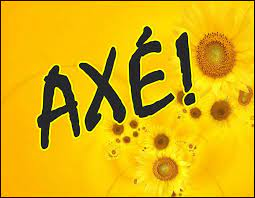

Axé
Blues
Country
Eletrônica

A música é uma forma de arte que se constitui na combinação de vários sons, ritmos e o silêncio, seguindo uma pré-organização ao longo do tempo. É considerada por diversos autores como uma prática cultural e humana. Não se conhece nenhuma civilização ou agrupamento que não possua manifestações musicais próprias.
A música é um dos principais elementos da nossa cultura. Há indícios de que desde a pré-história já se produzia música, provavelmente como conseqüência da observação dos sons da natureza. É de cerca do ano de 60.000 a.C. o vestígio de uma flauta de osso e de 3.000 a.C. a presença de liras e harpas na Mesopotâmia.
O Rock surgiu na década de 50 através da mistura de três gêneros musicais: Blues, Country e Jazz. Assim, surgiu o Classic Rock, uma mistura de vários gêneros musicais. Nesse período do Classic Rock surgiu Elvis Presley, considerado por muitos como o “o rei do rock”. Tal período foi o mais popular e prolífero do Rock.